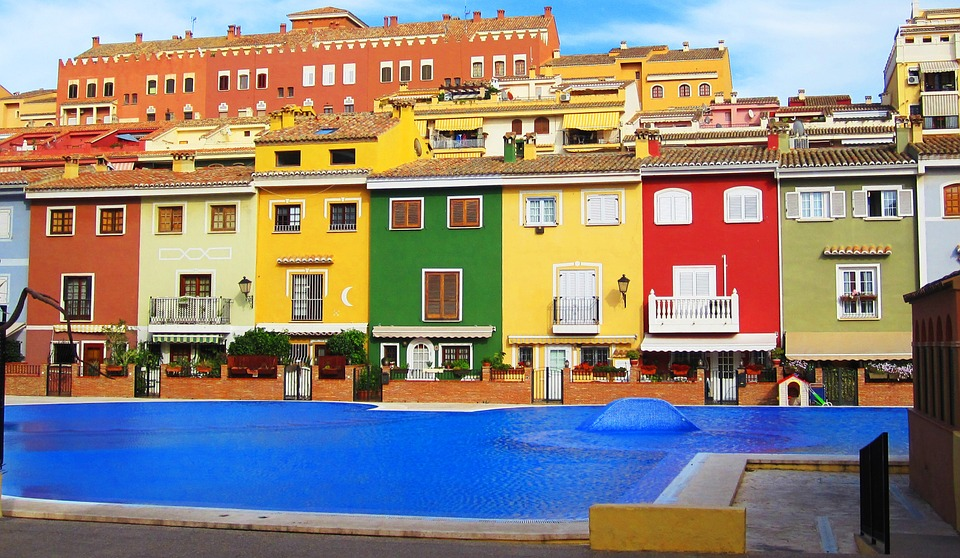
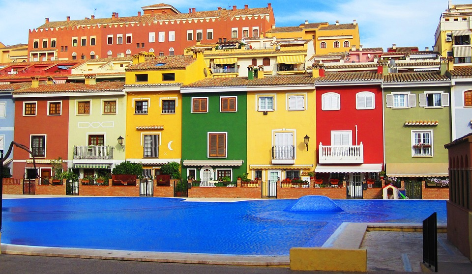
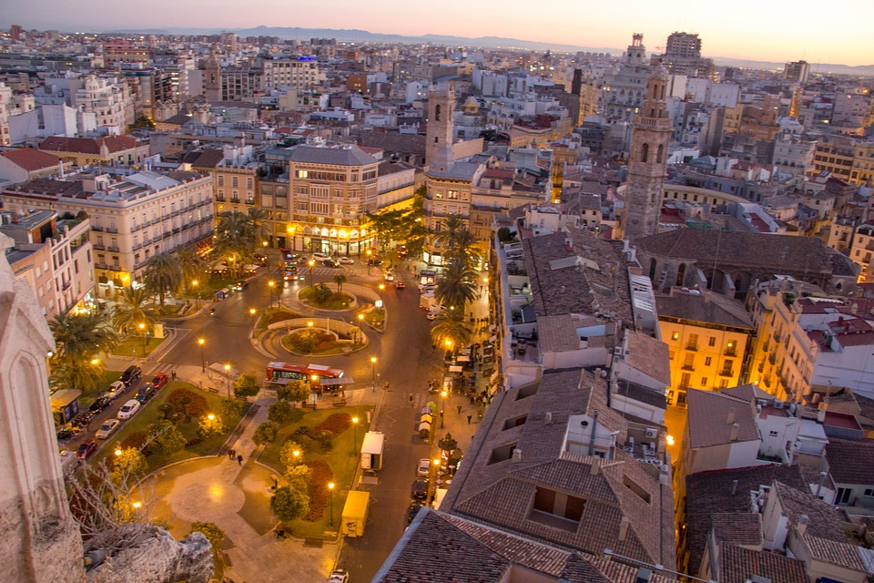
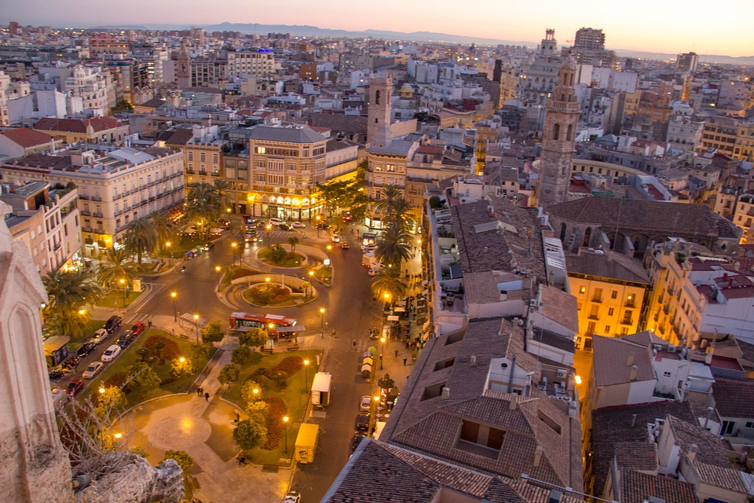

 



Click here for a map of the venue.
There are a number of accommodation options around the conference venue. Here is a quick map of some of the nearest accomodation options, and a list of near by hotels:
- Hotel SH Valencia Palace (5*) (Indicate the reservation code: ISORC 2019)
- Hotel Eurostars Rey don Jaime (4*)
- Hotel Barceló Valencia (4*)
- Hotel NH Valencia Las Artes (4*)
- Hotel NH Valencia Las Ciencias (3*)
Valencia is a popular destination for European and international travellers for trade, conference, and vacational purposes.
Flying through Madrid
Among the best and cheapest travel plans, you may consider to fly to Madrid;
take the metro or train to Atocha Station in Madrid center;
and then, take the fast train AVE from Atocha station in to Valencia.
The AVE journey between Madrid and Valencia takes 1h 30' aproximately.
The final stop in Valencia is Joaquín Sorolla station that is only 10 min away by taxi from ISORC conference venue.
If you plan to stop at Madrid to do some sight seeing before going to Valencia, you may choose to stay at a hotel close to Atocha station.
Flying through other major European capitals
Valencia has several daily direct flights from all northern European capitals as it is a popular touristic destination.
Flying times range from 40 min (Madrid - Valencia), 2h (Brussels-Valencia), 1h 40min (Paris Orly - Valencia) or 2h 20 min (London-Valencia).
Destination points in Valencia
Valencia Manises Airport: The metro arrives to the airport terminal.
From the airport stop to the conference venue by metro: 25 - 30 min aprox.
By taxi to the conference venue takes around 15-20 min.
Valencia Joaquín Sorolla AVE station: By metro to the conference venue takes 20 min aprox. By taxi: 10 min aprox.